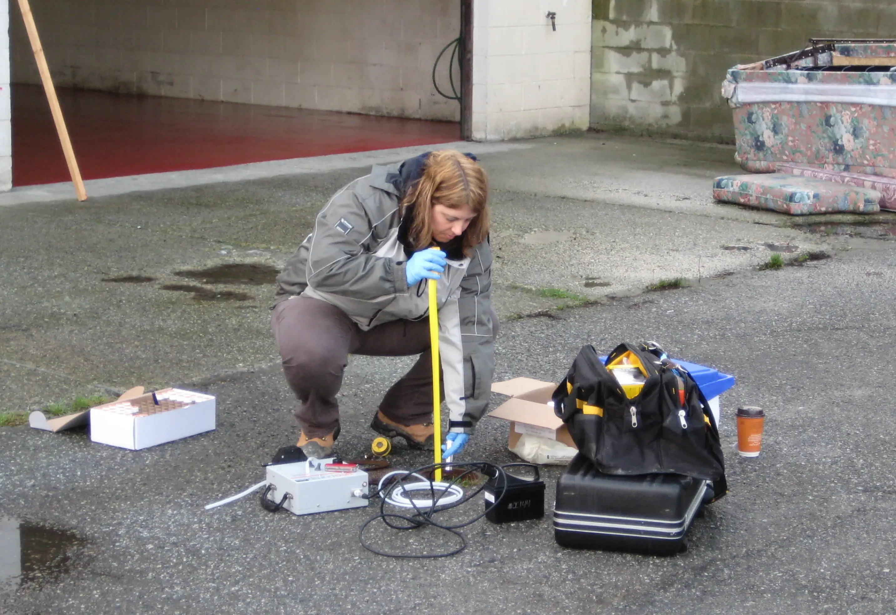
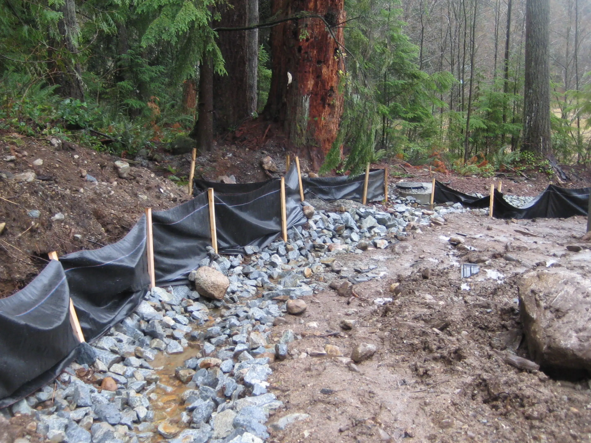
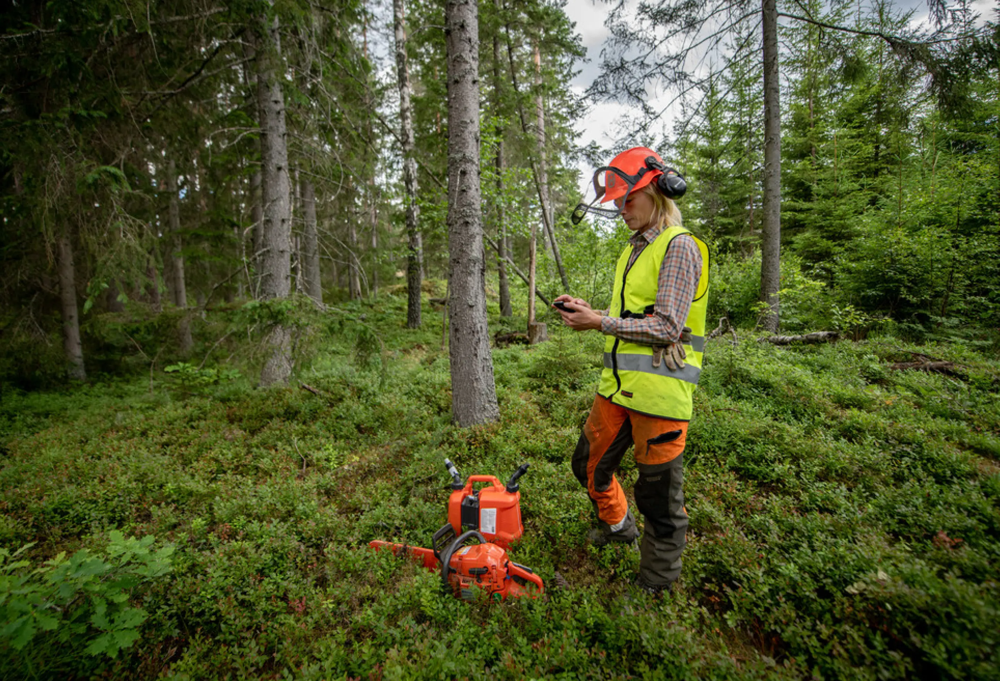
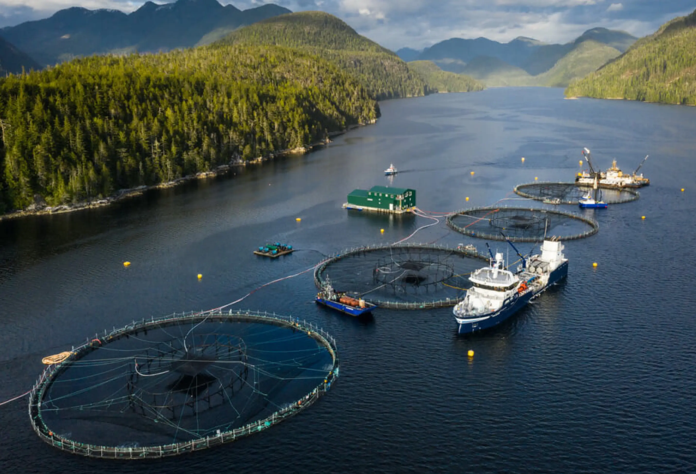
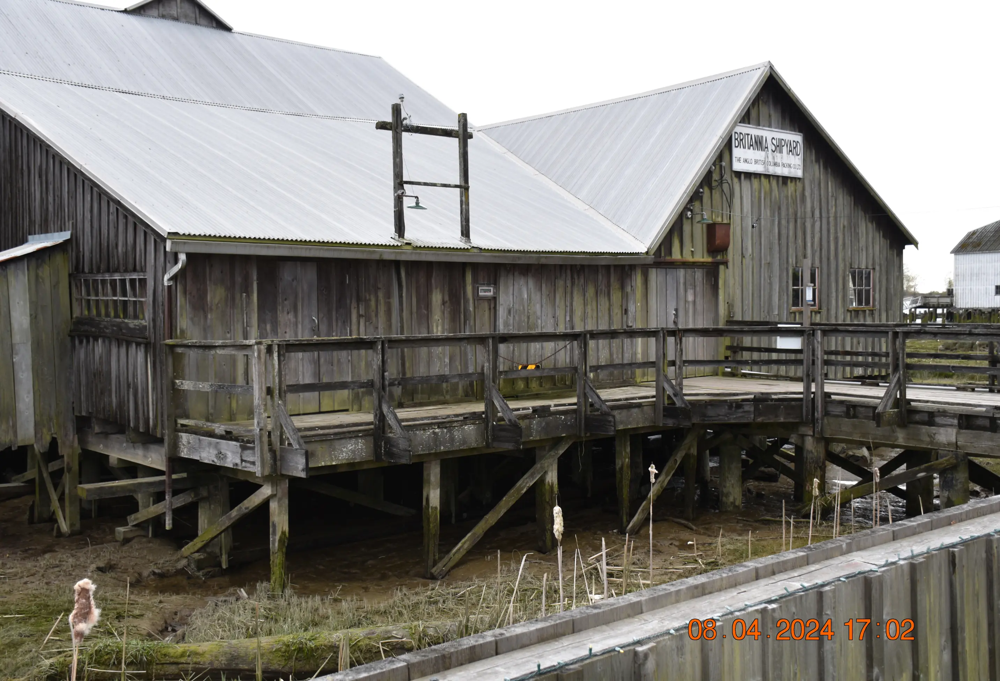

Environmental Solutions Backed by Over 50 Years of Experience
From preliminary investigations to remediation, environmental assessments and regulatory approvals, ENTECH provides practical solutions tailored to each project.

Environmental Site
Assessments & Remediation
ENTECH provides environmental investigations and contaminated site remediation services for residential, commercial, and industrial properties. We assess environmental conditions, identify contamination, and develop practical solutions to support property transactions, redevelopment, and regulatory compliance.
Our services include
- Phase I & II Environmental Site Assessments (Stage 1 & 2 PSIs)
- Contaminated site remediation and monitoring
- Underground and aboveground storage tank investigations
- Environmental closure and remediation reporting

Environmental Permitting &
Regulatory Compliance
ENTECH assists clients in navigating environmental regulations and obtaining the necessary approvals for development, remediation, and resource-related projects. We provide technical documentation, environmental monitoring, and coordination with municipal, provincial, and federal regulatory authorities.
Our services include
- Environmental permit applications and regulatory submissions
- Environmental Management Act and Contaminated Sites Regulation compliance
- Environmental monitoring and compliance inspections
- Environmental management and mitigation planning

Environmental Impact
Assessments & Ecological
Studies
ENTECH has extensive historical experience evaluating the environmental impacts of infrastructure development, industrial activities, and natural resource projects. Our work includes ecological investigations, wildlife habitat assessments, and environmental studies of freshwater and terrestrial ecosystems.
Our services include
- Environmental impact assessments
- Wildlife and habitat investigations
- Wetland and riparian assessments
- Aquatic and terrestrial ecosystem studies
Aquaculture & Fisheries
Consulting
ENTECH has a longstanding history in fisheries research, aquaculture development, and aquatic resource management. Our environmental consulting services support the assessment and planning of sustainable aquaculture operations and the protection of marine and freshwater ecosystems.
Our services include
- Aquaculture feasibility and environmental assessments
- Fisheries and aquatic habitat investigations
- Marine and freshwater water quality assessments
- Aquaculture permitting and regulatory support

Forestry & Natural Resource
Management
ENTECH provides environmental consulting services related to forestry, land development, and natural resource management. Our work focuses on evaluating environmental conditions, identifying potential impacts on natural ecosystems, and supporting responsible resource development.
Our services include
- Forestry and land-use environmental assessments
- Wildlife and vegetation studies
- Watershed and riparian habitat investigations
- Resource development impact assessments

Mining & Industrial
Environmental Consulting
ENTECH provides environmental assessment and monitoring services for mining, mineral exploration, and industrial development projects. Our experience includes environmental investigations, mine tailings assessment, water quality monitoring, and technical studies supporting environmental management and permitting.
Our services include
- Mining and industrial environmental assessments
- Mine tailings and waste characterization
- Environmental baseline studies
- Mine reclamation and remediation planning
Have a project in mind?
Tell us about your property or development and we’ll get back to you to discuss next steps.